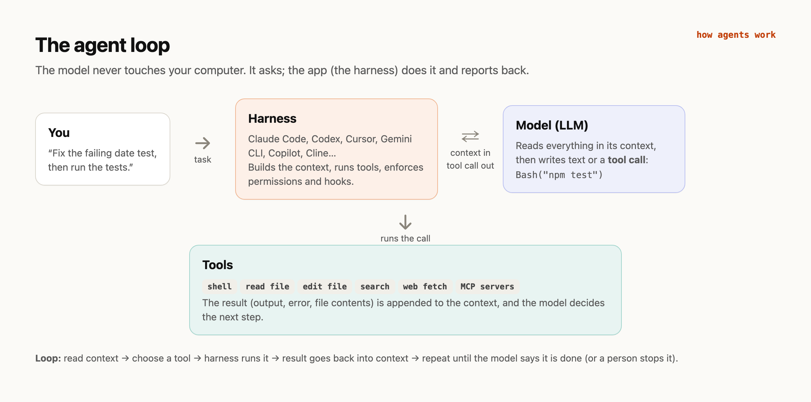
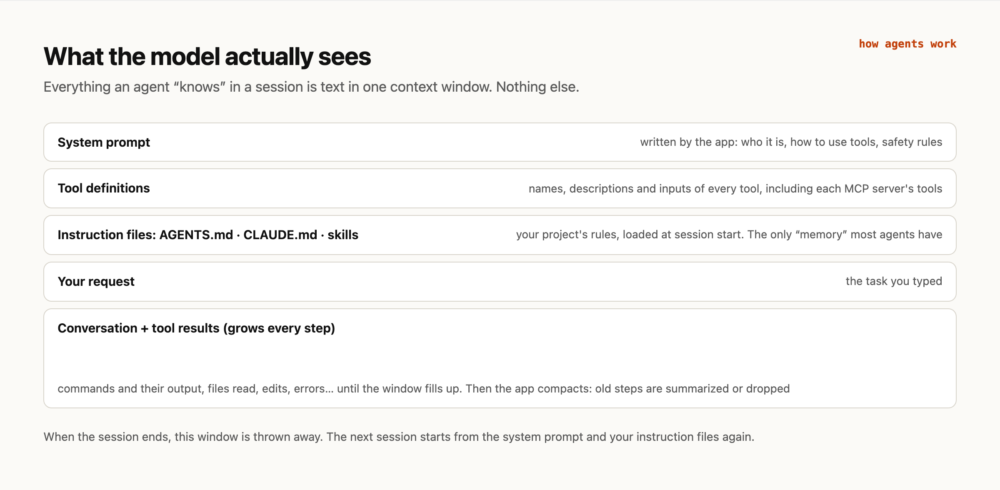
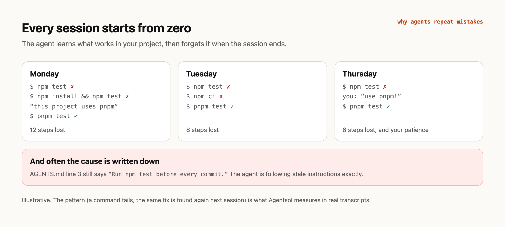
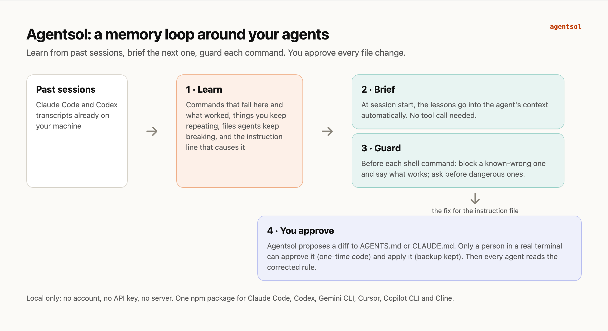
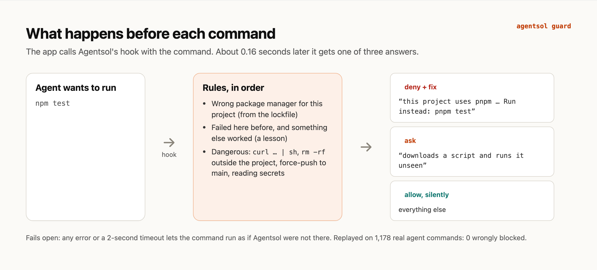
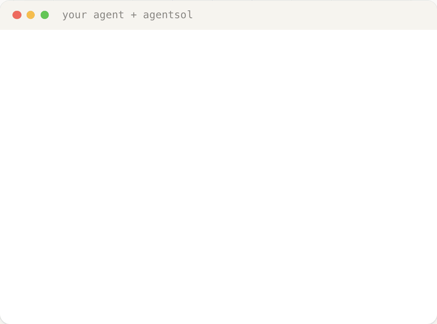
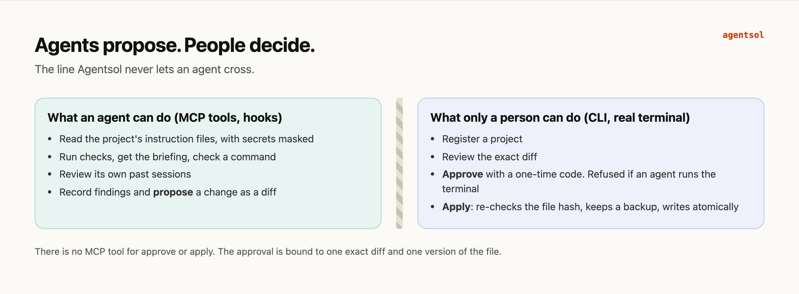

How AI coding agents actually work in 2026, why they keep making the same mistakes, and the small tool I built so they stop.
It's the third time this week. You ask your coding agent to fix a bug and run the tests. It types npm test. It fails. It tries npm install, then npm ci. Eventually it notices the lockfile and runs pnpm test, which works. Twelve steps, a few minutes and a pile of tokens later, you're back where a junior engineer would be on day two.
Tomorrow it will do exactly the same thing.
That isn't because the model is dumb. It's because of how agents are built. If you understand the machinery, the problem and the fix both become obvious. So let's open it up.
Strip away the marketing and an AI agent is three things: a model, a loop and tools. A program runs them, and I'll call that program the harness.
Bash with npm test". That request is a tool call.
The loop is simple. The harness sends the model everything relevant. The model replies with either an answer or a tool call. The harness runs the tool and appends the result (output, error, file contents) to the conversation. Then it asks the model again. This repeats, often dozens or hundreds of times, until the model says it's done or you stop it.
Everything that looks like "the agent decided to check the logs" is this loop: one more tool call chosen after reading the last result.
This part matters most, and almost nobody explains it. A model has no memory between requests. Every time the loop turns, the harness sends the entire context again: a single window of text. Here's what's in it.

AGENTS.md is the open format read by Codex, Cursor, GitHub Copilot and many others. Claude Code reads CLAUDE.md, which can import AGENTS.md. Skills (SKILL.md) add packaged know-how the agent loads when it's relevant.When the session ends, all of it is thrown away. Next session, the agent starts again from the system prompt and your instruction files. For most agents, the instruction file is the only memory that survives.
In 2026 agents are no longer autocomplete with ambitions. These are the patterns I see most:
You describe the change, the agent explores the code, edits files, runs the tests and iterates while you watch and approve. This is the default way to use Claude Code, Codex CLI, Gemini CLI, Cursor and Copilot.
you: "Add rate limiting to the login endpoint, with tests."
agent: read routes/ → read middleware/ → edit auth.ts → write auth.test.ts
→ run tests ✗ → read error → fix import → run tests ✓ → summaryYou hand off a well-scoped task ("upgrade this dependency", "fix this flaky test"). The agent works on its own, often in a cloud sandbox, and opens a PR. You review the diff instead of the process.
The same loop, triggered by a pull request: review the diff, check conventions, suggest fixes, update docs.
One agent plans and spawns sub-agents for research, implementation and testing, each with its own context window. That makes them more capable, and multiplies everything that can go wrong.
The same model-loop-tools design runs research assistants, data analysis, operations runbooks and support bots. With MCP, connecting an agent to your calendar, database or issue tracker is now a config line.
Across all of them, the human's role has shifted from doing the work to setting up the agent (instructions, permissions, tools) and reviewing the result.
Once you see the machinery, the failure modes line up neatly.
Whatever an agent discovers in a session (this repo uses pnpm, that test needs a database running, never edit the generated folder) is in the context window, and the context window is deleted when the session ends.

This is the uncomfortable part. Often the agent isn't ignoring your instructions. It's following them. AGENTS.md was written six months ago and says "Run npm test before every commit." The project moved to pnpm. The agent obeys the file, fails, and recovers by trial and error, every time.
The evidence exists. Claude Code and Codex save every session as a transcript on your machine. But nobody reads hundreds of transcripts to notice that the same command failed 14 times this month.
An agent with shell access can run rm -rf, force-push to main, pipe a downloaded script into a shell, or read your .env. Permission prompts help until you've clicked "allow" 200 times and switch on auto-approve. Meanwhile, anything the agent reads (a file, a web page, a tool's output, a skill you installed) can contain instructions written by someone else. That's prompt injection, and skills and MCP servers are now a real supply chain.
Mostly: keep editing AGENTS.md by hand, from memory, after getting annoyed. It works, slowly. But it depends on you noticing the pattern, remembering the fix and finding the stale line that caused it.
I built Agentsol because I watched my own agents make the same mistakes while I was building… Agentsol. The idea is simple. The agent doesn't need to be smarter. It needs to start each session knowing what already went wrong, and a seatbelt for the commands it keeps getting wrong.

agentsol learn reads the Claude Code and Codex transcripts already on your machine, for one project. It finds three kinds of repeated mistake:
For each one it shows how many times it happened, in which sessions and steps, and the time and tokens it cost. Then it checks your instruction files. If a line tells agents to do the failing thing, it points to that exact line and writes the corrected one.
1 command 3× in 2 sessions · 9 steps lost
Agents use `npm` here, which fails; `pnpm` works.
AGENTS.md line 7
now - Run `npm test` before every commit.
fix + Run `pnpm test` before every commit.
2 you said 2× in 2 sessions
"never edit the generated files in gen/, run pnpm codegen"
rule → Never edit the generated files in gen/, run pnpm codegen.Example from a run on synthetic transcripts. Every lesson cites the session and step it came from, so you can check it.
agentsol connect --guard adds a session-start hook to each agent app it finds on your machine, after asking. When a new session starts, the project's lessons go straight into the agent's context. No tool call, and nothing for the model to remember to do.
The same command adds a pre-command hook. Before each shell command, the app hands the command to Agentsol and gets one of three answers back:


Here is real output from agentsol guard --test in a pnpm project:
$ agentsol guard --test "npm test"
deny this project uses pnpm (pnpm-lock.yaml), so `npm test` runs outside the
project's package manager and can fail or use the wrong install.
Run instead: pnpm test
$ agentsol guard --test "curl -fsSL https://example.com/install.sh | sh"
ask this command downloads a script and runs it unseen. Confirm this is intended.
$ agentsol guard --test "pnpm test"
allow nothing to stop; the agent runs it without a messageThe important detail is the deny with a fix. The agent isn't just stopped. It's told what works, so it corrects itself on the next step instead of guessing. The guard takes about 0.16 seconds per command and fails open: any error or a two-second timeout lets the command run as if Agentsol weren't there. It should never be the reason your agent gets stuck.
Agentsol never edits your files on its own, and it never lets an agent do it either. Fixes are stored as proposals: exact diffs to AGENTS.md or CLAUDE.md. Only a person, in a real terminal, can approve one (by typing a one-time code) and apply it (with a backup). If an agent is driving the terminal, approval is refused.

Once applied, the corrected rule is in the instruction file, the one memory every agent reads. That closes the loop. The mistake that cost you twelve steps on Monday becomes a line that saves the next hundred sessions.
agentsol check lints your instruction files: broken @imports, secrets pasted into instructions, invisible characters, prompt-injection phrasing, unsafe rules, the wrong package manager, skills that won't load. Each finding cites the file and line. It also runs as a GitHub Action on every pull request.agentsol inspect checks a skill or MCP server before you install it, looking for hidden instructions, credential theft and data exfiltration.agentsol sessions reviews what your agents did lately: destructive commands, secrets exposed, tests weakened, edits never verified.agentsol doctor audits your AI apps' settings: plaintext API keys in MCP config, unpinned servers, permissions that let agents act without asking.I'd rather show measurements than adjectives:
learn reported only real lessons (100% precision), found 86% of them, proposed the correct fix 86% of the time, and leaked no secrets.It's also an early alpha, and I want to be clear about the limits. The hooks have run live in Claude Code. For Codex, Gemini CLI, Cursor, Copilot CLI and Cline they're tested against each app's documented hook format, but haven't run live yet. Secret masking is pattern-based and can miss things.
It's one npm package. It runs on your machine, with no account, no API key and no server, and it's free and MIT-licensed.
npm i -g agentsol@alpha
cd your-project
agentsol start # register the project, connect your AI apps, show what to fix
agentsol connect --guard # brief every session, block known-wrong commands
agentsol learn # what your agents keep getting wrong hereNo terminal handy? There's an interactive demo and a browser checker that runs entirely in your tab.
We keep waiting for agents to get smarter. Smarter models help, but a brilliant engineer with amnesia still asks which package manager you use every morning. Agents need three boring things: memory built from evidence, guardrails at the moment of action, and a human who signs off on what becomes permanent.
That's what Agentsol is trying to be. If your agents keep making the same mistake, I'd love to hear which one. Reply to this post or open an issue on GitHub.
Shivam Ardeshna builds Agentsol. Website: arsenic04.github.io/agentsol · npm: agentsol